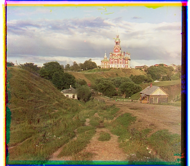
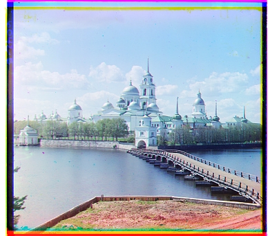
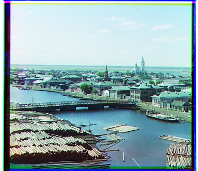

Approach: Using exhaustive search over a [-15,15] pixel window with Normalized
Cross-Correlation
scoring. This method works well for smaller .jpg images where displacements are typically small.

Cathedral
Red: (12, 3)
Green: (5, 2)
Green: (5, 2)

Monastery
Red: (3, 2)
Green: (-3, 2)
Green: (-3, 2)

Tobolsk
Red: (6, 3)
Green: (3, 3)
Green: (3, 3)